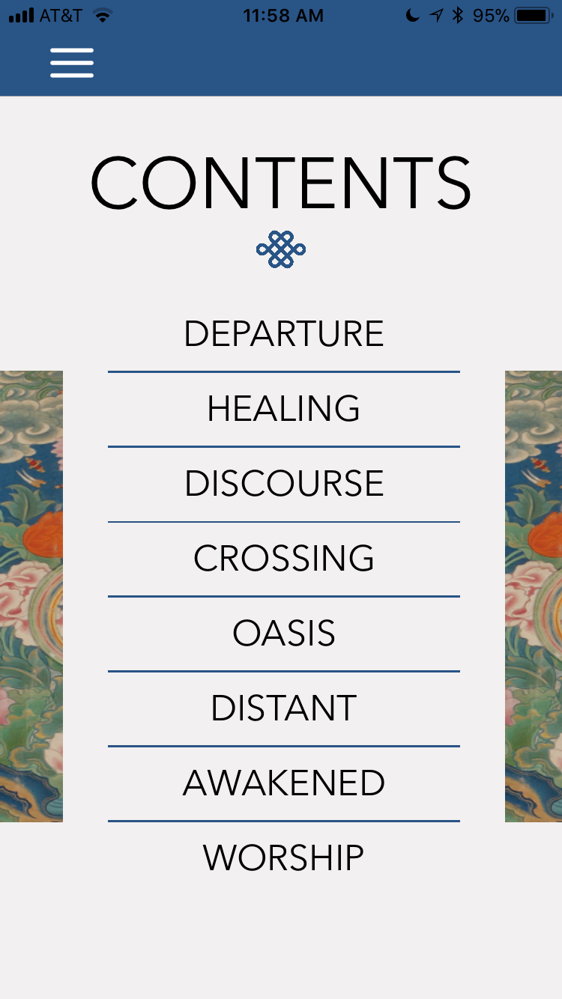
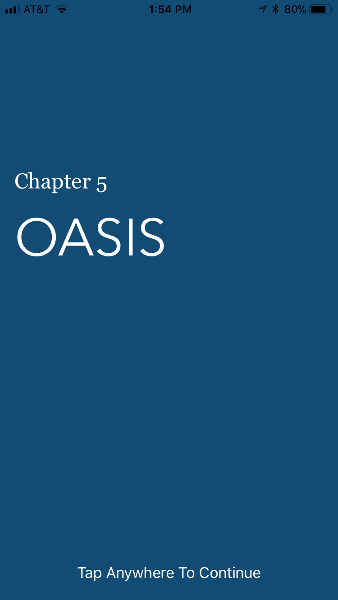
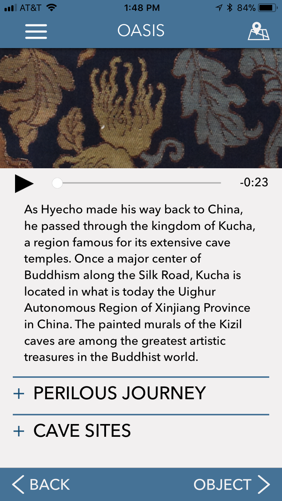
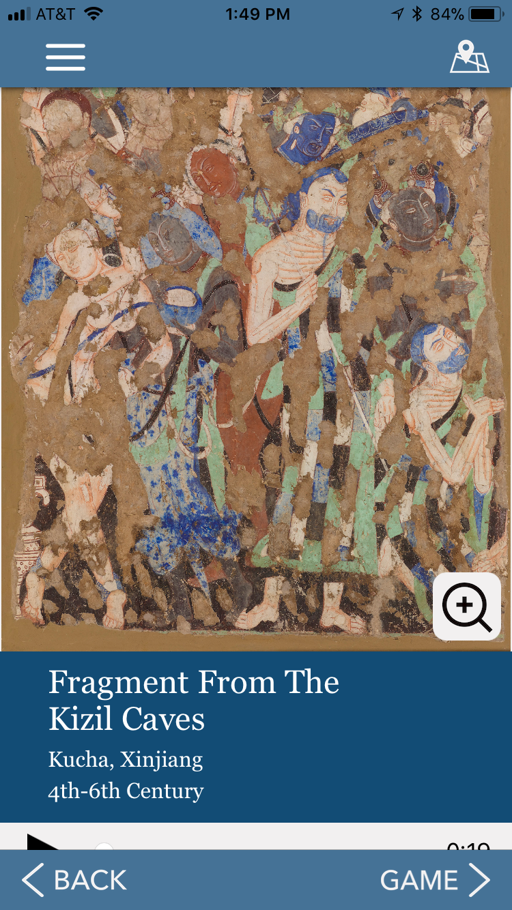
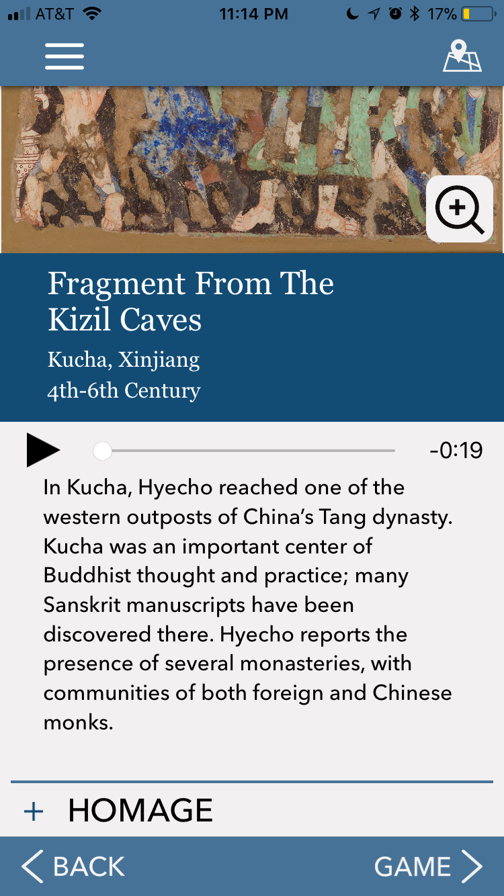
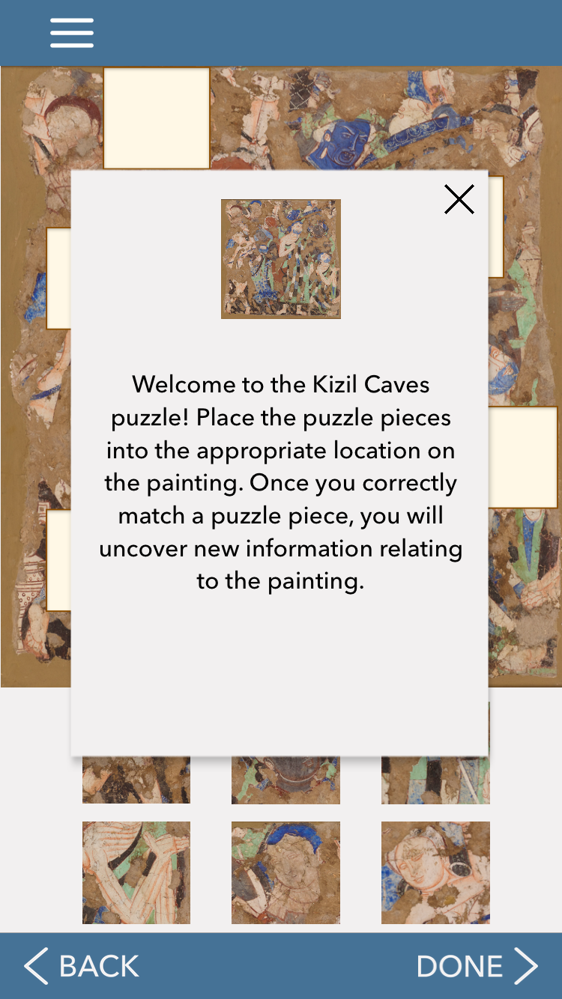
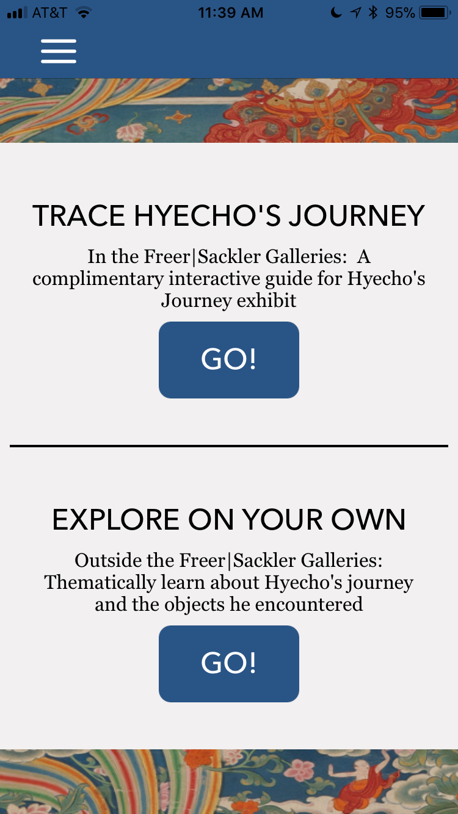
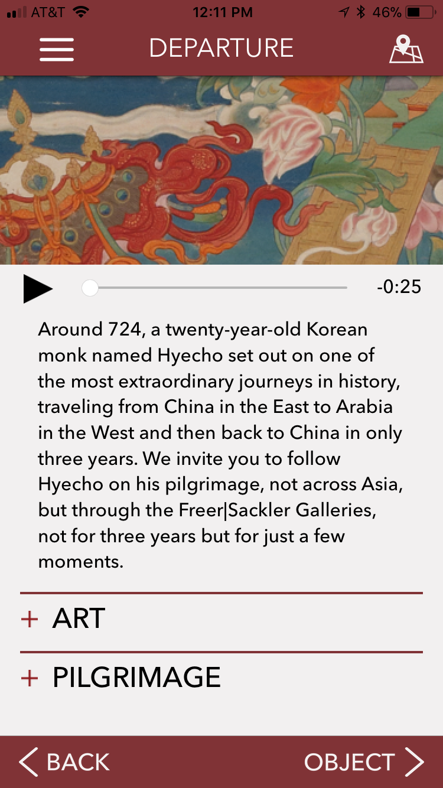

My Process
During the 10 months from the beginning to the launch of two applications, I led the effort of user research and ideation, created storyboards, prototypes, and app flows to communicate design ideas with team and stakeholders, delivered high-fidelity design, and conducted usability tests. We iterated on the design constantly to find the best solution under changing stakeholder requirements, diverse user needs, and multiple content layers.
Step 0 Prioritizing Stakeholder Goals
What are we designing for?
Our sponsors asked for a mobile app about Hyecho (a young Korea monk in the 2nd century, which is also the protagonist in their newly published book) that can enhance the visiting experience of an upcoming Buddhist art exhibition, increase young people’s interest in Buddhist art, and have educational value beyond and after the exhibit. These were three distinct goals that would yield different outcomes. Since the app is directly related to the exhibition and we do not have any marketing resources, museum visitors are the people who are most likely to access the product and benefit from it. We helped our stakeholders prioritize their goals and focused the product on enhancing the visiting experience of the exhibition.
Step 1 User Research and Value Proposition
Aligning user needs with features
To understand museum visitors and their views on an exhibition companion app, we conducted 21 user interviews with and requested a visitor study report from the museum. The visitor study contains over 1500 entrance-exit surveys, an observation study, and an interview study with over 70 interviews. We used this information to answer questions that are crucial to our product definition.
What do users want from an exhibition companion app?
In the user interviews, We asked people "what would make you want to download a companion app for a museum exhibit". Combining interview insights to museum visitor studies, we found out about the things that will users want from a companion app:
-
Information offered nowhere else in the exhibition
"[I would download the app] if it convinced me that it would improve my experience and if the app contained information not available through the exhibit itself."
-
Historical context and engaging narrative for the exhibition
"Among possible new features, more visitors were interested in people stories." – Freer Gallery of Art 2015 Visitor Studies
-
Easy to use
"Easy to use", "Decent user interface"
-
Entertainment
"Games I could play so that I could be entertained", "Entertaining"
What are the pain points?
Through user research, we also found some major pain points that we need to address:
-
People think museum apps are not necessary
"I never did that. I do not think it is really necessary."
-
Buddhist art and the Smithsonian Museums are perceived as “boring” by many people
"Colorful, boring, old" – Three words an interviewee used to describe Buddhist art.
Some interviewees mentioned that they want an audio narration guide from the app. This inspired us to consider audio guide as a way to make the "unnecessary" museum app "necessary". Audio guide in museums usually charges a fee, but the wireless network in the museum and our app are free. To validate this solution, we sent out a survey on audio guide consumption and found that 93% of the respondents find audio guide helpful in perceiving new information, and that 75% percent of them have used audio guide.
We aligned our value proposition to our findings from user research and defined out product on a high level.
What content should the app have?
Our app is going to be content-centric, but our stakeholders want us to come up with the types of content we want and develop it afterwards. To deal with this challenge, we dived deeper into user needs.
The museum visitor study contains detailed information of the visitors including demographics. We created personas based on the data to guide our design decisions. We got the feedback from people at the museum that the personas reflect their audience very well.
The museum study stated that "The Freer audience is relatively young, predominantly female, and one-half regional；Three in five are very interested in Asian art/history/culture; half are very interested in Middle Eastern art/history/culture." Therefore we picked Ashley as our main persona and I made a journey map to illustrate her museum visiting experience and highlight the pain points she has.
Combining the pain points in the user journey and former research findings, we decided that our app will provide narratives that connects the artworks to the pilgrimage of Hyecho, in-depth information about the artworks, and gamified, engaging content for younger audience or those who are less interested in the exhibition itself.
Step 2 Ideation and prototyping
Solving design challenges
How to integrate different kinds of content?
Based on user research, we decided that the app would mainly provide three types of content:
- The story of Hyecho in relation to the artworks
- Information on the artworks
- Gamified content
The first challenge we faced was how to integrate these very different content in one product in a natural way. I started by brainstorming with sketches, storyboards, and low-fidelity prototypes. I explored several options including whole app as a game (user prefer app to a full-on game), a cartoon Hyecho as a narrator (not sophisticated enough for the subject matter), grouping objects by geographical location and collecting objects with a journal (requirements changed, this idea no longer worked when we learned that only 8 of the artworks should be in our app).
I used storyboards and low-fidelity prototypes to communicate initial ideas with stakeholders
Inspired by the book related to Hyecho written by our sponsors, we came to use the metaphor of a book to connect all the dots. For each artwork in our app (we have 8 in total), there is one "book chapter" related. Page 1 is Hyecho’s Journey in relation to the artwork, page 2 is in-depth information on the artwork, and page 3 is a mini game related to the content for younger audiences. The chapters are organized in the order of a physical route that a visitor might take in the museums, and the logic of the storyline also fits with the story of Hyecho's pilgrimage. The first chapter, for example, is Hyecho's initial departure at sea.






Left to right: table of content, transition screen, story page, artwork information page 1, artwork information page 2, game page
How to guide visitors through the physical space?
The design of a linear book structure also provides a way of guiding visitors through the physical space. The exhibition site consists of two galleries, the Freer and the Sackler, and the building structure is rather complicated. The museum does not provide any kind of map or guidance, and our stakeholders hoped that our app can help reduce the confusion caused by the building structure. We worked with museum curators and found the most optimized way to arrange the chapters so that users can follow the app to walk through the exhibition from one end to the other. Users can click on the map icon in each chapter to open a map with directions. The app will return to portrait orientation when users close the map.
How to accommodate different museum visiting behaviors?
When we did research on existing literature in technology and museums and interviewed people, we found that there are two distinct museum visiting patterns: following a structured tour or freely choose what to look at. Our app aims to provide a meaningful narrative to connect the artworks and provide a route for visiting, but we also need to support those who want to freely roam around. Therefore we provided two options for users in the app. They can either choose to follow the linear journey or visit any chapter.

Users see two options when they open the app
How to optimize audio guides?
In our survey about audio guides, besides the usefulness of it, we also found some pain points that people are having with audio guides. One user told us that "I want the option to skip ahead if I'm less interested in a particular work, or go deeper if I'm more interested in one...It's no fun to have to stand for too long just to hear the audio". Traditional audio guides are too long and not flexible enough for visitor's diverse interest.
In the spirit of making the content short and easy to consume, we broke the content down into smaller sections and designed leveled audio guides. Each section has a title so people can choose the content that interests them.

Text and audio are broken down into expandable sections with titles
Adapting to changing project requirements
During the ideation phase, drastic changes in stakeholder requirements nearly rendered our first version of the app flow useless. Initially, we were told there are 23 objects we need to put in the app, and that the museum does not provide any other information or service to visitors besides the most basic labels on the wall. Therefore our first idea was centered around audio guide. We grouped objects by geographical locations to provide context and connections between objects. Users can either visit each location on a map or view a catalog of all the objects.

I put together app flow version 1 with the help of Rebecca and Sindhu
However, when it was nearly three months into the project, we learned that there are only 8 objects we should put in our app, and that the museum is already making another mobile app that is mainly an audio guide. We also learned that we need to make another tablet app to install on the tethered tablets in the museum exhibition. This means that our old structure cannot be applied, and we only have around one week to come up with a new solution. After extensive brainstorming with the whole team, we decided to focus our mobile app more on a unique narrative and guidance through the physical space instead of artwork catalog and audio guide. To complement the content of the mobile app, the tablet app was designed to be a geographical map of Hyecho's journey and detailed introduction of each location he visited.
Usability Testing
We conducted one round of in-person usability testing in the summer and it helped us resolve our mobile app navigation. In the initial design, we used the commonly adopted bottom navigation bar and top status bar with a back button. In our new design, we have eight chapters and each chapter contains an introduction page, an object page, and an interaction page. There is increased need to go back and forward between these pages. iPhones are also getting bigger and I started to see iOS apps put important functionalities at the bottom closer to the thumb. We decided to put back and forward buttons at the bottom and use the infamous hamburger menu to contain pages that will not be frequently used.
We asked users to compare the two navigation models with prototypes and found that the bottom back and forth button with hamburger menu is preferred. In our latest testing with the launched app, over 85% of users do not have any difficulties navigating the app.
Before launching the app, we conducted 9 structured usability tests and guerrilla usability tests. We modified the app based on user feedback and summarized spaces for improvement for our clients.
Test Option 2

Final Design

Making of the iPad App
It was summer break after the big change in stakeholder requirements and app flow. I did an internship at Teletracking and designed the ipad app during my time after work. After deciding on the structure with stakeholders, I iterated on the visual design of the app and picked a Buddhist art inspired colorful palette to make it more eye-catching and fun.
Icon and Illustrations
I designed the icon for our apps and made illustrations to enhance the immersiveness of our interactions.


{kind=link}
{kind=link}
{kind=link}
{kind=link}